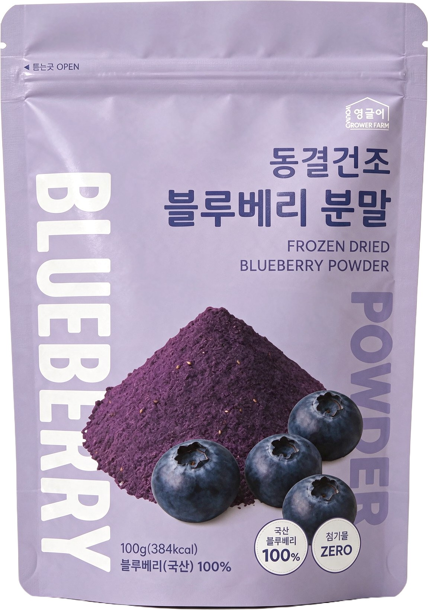

생산과 연구가
식품으로 이어진 결과.
영글어농장의 제품군은 과일 재배와 가공, 버섯 배양과 소재 연구에서 출발합니다. 각 제품을 사업의 연결 속에서 소개합니다.
과일 재배와 가공
블루베리·복숭아는 자사 원물을 기반으로 하며, 과일칩의 딸기·감귤은 원물을 매입합니다.

동결건조 과일칩
블루베리·설아복숭아·딸기·감귤 4종. 개별 15g 파우치와 선물 구성을 선보입니다.

과일 분말
블루베리·딸기·복숭아·감귤 4종. 분말 형태로 과일의 활용을 넓힙니다.

블루베리즙
블루베리 재배·가공 경험을 액상형 식품으로 연결합니다.

신선 과일
블루베리, 설아복숭아와 골든복숭아를 생산·유통합니다.
버섯 배양과 곡물 식품
현미 기반 버섯 배양과 가공 경험이 버섯쌀, 진액과 간식으로 이어집니다.

보위강 버섯쌀
현미 기반 버섯 배양 경험을 일상 식재료로 연결한 제품입니다.

머쉬라이스칩
버섯쌀이 함유된 현미칩. 60g 파우치로 선보입니다.

보위강 버섯 진액
버섯 원료의 가공·농축을 액상 식품으로 구현합니다.
곡물 활용의 확장
파로, 호라산밀과 병아리콩을 활용한 곡물 제품으로도 개발 범위를 넓히고 있습니다.
성분 연구에서 이어지는 개발.
알부민상황버섯케어와 코디세핀20 등의 식품을 개발·판매하며, 버섯 유래 성분과 식품 소재의 활용을 확장하고 있습니다.
협력 검토를 위한 제품 정보
동결건조 과일칩과 머쉬라이스칩을 중심으로 해외 바이어 상담을 진행합니다. 현재 규격, 원재료, 소비기한과 공급 가능 조건은 담당자에게 문의해 주세요.
협력 문의